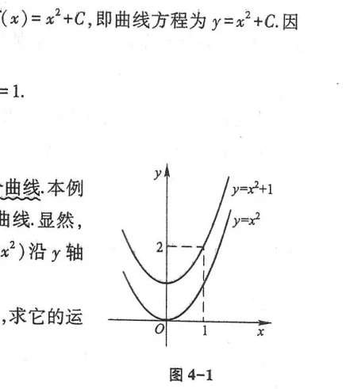
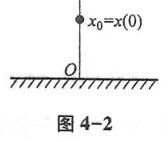
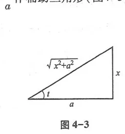
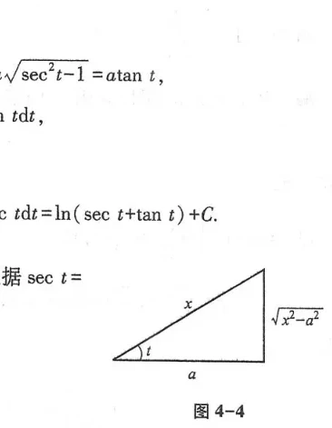
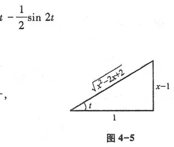

第四章 不定积分
在前两章中，我们研究了微积分的一大核心运算——微分法：已知函数 $F(x)$，求其导数 $f(x) = F'(x)$. 然而，在大量的物理学与工程应用中，往往面临着相反的问题：已知物体的瞬时运动速度求其路程函数，已知曲线上各点的切线斜率求该曲线的方程，已知非均匀杆的线密度求其质量分布等. 这就提出了互逆的运算需求：已知导数 $f(x)$，寻求原来的函数 $F(x)$. 这类互逆运算称为求原函数或不定积分（Indefinite Integral）. 本章将建立原函数与不定积分的概念，总结基本积分公式表，系统深入讨论换元积分法、分部积分法以及有理函数积分的技巧.
第一节 不定积分的概念与性质
一、原函数与不定积分的定义
设函数 $f(x)$ 定义在某区间 $I$ 上. 如果在区间 $I$ 内任一点 $x$，都有：
$$F'(x) = f(x) \quad \text{或} \quad dF(x) = f(x)dx$$
那么函数 $F(x)$ 就称为 $f(x)$ 在区间 $I$ 内的一个原函数.
原函数存在定理：若函数 $f(x)$ 在区间 $I$ 上连续，则 $f(x)$ 在区间 $I$ 上必有原函数.（此定理将在第五节用变上限积分严格证明）.
原函数的结构性质：如果 $F(x)$ 是 $f(x)$ 的一个原函数，那么对于任意常数 $C$，$F(x) + C$ 也是 $f(x)$ 的原函数；反之，$f(x)$ 的任意两个原函数之间仅仅相差一个常数.
在区间 $I$ 上，函数 $f(x)$ 的全体原函数称为 $f(x)$ 在该区间上的不定积分，记作：
$$\int f(x)dx = F(x) + C$$
其中 $\int$ 称为积分号，$f(x)$ 称为被积函数，$f(x)dx$ 称为被积表达式，$x$ 称为积分变量，$C$ 称为积分常数.
不定积分的几何意义：微分方程 $\frac{dy}{dx} = f(x)$ 的解曲线称为积分曲线. 不定积分 $\int f(x)dx = F(x) + C$ 在几何上表示一族平行曲线（图 4-1、图 4-2）. 在相同横坐标 $x$ 处，各条积分曲线的切线斜率都等于 $f(x)$，因而切线彼此平行.


二、不定积分的基本性质
- 非零常数因子可以移到积分号外：$\int k f(x)dx = k \int f(x)dx \quad (k \ne 0)$
- 有限个函数代数和的积分等于各函数积分的代数和：$\int [f(x) \pm g(x)]dx = \int f(x)dx \pm \int g(x)dx$
三、基本积分表
- $\int 0\,dx = C$
- $\int x^\mu dx = \frac{x^{\mu+1}}{\mu+1} + C \quad (\mu \ne -1)$
- $\int \frac{1}{x}dx = \ln|x| + C$
- $\int e^x dx = e^x + C, \quad \int a^x dx = \frac{a^x}{\ln a} + C$
- $\int \cos x\,dx = \sin x + C$
- $\int \sin x\,dx = -\cos x + C$
- $\int \sec^2 x\,dx = \tan x + C$
- $\int \csc^2 x\,dx = -\cot x + C$
- $\int \sec x \tan x\,dx = \sec x + C$
- $\int \csc x \cot x\,dx = -\csc x + C$
- $\int \frac{dx}{a^2 + x^2} = \frac{1}{a}\arctan\frac{x}{a} + C$
- $\int \frac{dx}{\sqrt{a^2 - x^2}} = \arcsin\frac{x}{a} + C$
- $\int \frac{dx}{x^2 - a^2} = \frac{1}{2a}\ln\left|\frac{x-a}{x+a}\right| + C$
- $\int \frac{dx}{\sqrt{x^2 \pm a^2}} = \ln|x + \sqrt{x^2 \pm a^2}| + C$
第二节 换元积分法
一、第一类换元法（凑微分法）
设 $f(u)$ 具有原函数 $F(u)$，且 $u = \varphi(x)$ 可导，则：
$$\int f(\varphi(x))\varphi'(x)dx = \int f(\varphi(x))d\varphi(x) = \left. \int f(u)du \right|_{u=\varphi(x)} = F(\varphi(x)) + C$$
二、第二类换元法（变量代换法）
当被积函数含有根式等难以直接凑微分的结构时，引进新自变量 $x = \psi(t)$，将复杂的无理式转化为有理式.
设 $x = \psi(t)$ 单调可导，且 $\psi'(t) \ne 0$. 若 $\int f(\psi(t))\psi'(t)dt = G(t) + C$，则：
$$\int f(x)dx = \left. G(t) \right|_{t = \psi^{-1}(x)} + C$$
经典三类三角代换（利用辅助直角三角形回代，图 4-3、图 4-4、图 4-5）：
- 含 $\sqrt{a^2 - x^2}$：令 $x = a\sin t \quad (-\frac{\pi}{2} < t < \frac{\pi}{2})$，根式化为 $a\cos t$；
- 含 $\sqrt{a^2 + x^2}$：令 $x = a\tan t \quad (-\frac{\pi}{2} < t < \frac{\pi}{2})$，根式化为 $a\sec t$；
- 含 $\sqrt{x^2 - a^2}$：令 $x = a\sec t \quad (0 \le t < \frac{\pi}{2} \text{ 或 } \pi \le t < \frac{3\pi}{2})$，根式化为 $a\tan t$.



第三节 分部积分法
根据乘积求导法则 $(uv)' = u'v + uv'$，两边积分得：$\int (uv)'dx = \int u'v dx + \int uv' dx$. 移项整理得到：
$$\int u\,dv = uv - \int v\,du \quad \text{或} \quad \int u(x)v'(x)dx = u(x)v(x) - \int v(x)u'(x)dx$$
口诀：“反、对、幂、指、三”
排在前面的优先选作 $u$（通过求导降次或转化为代数式），排在后面的选作 $dv$（易于积分出 $v$）.
- $\int P_n(x)e^{\lambda x}dx, \int P_n(x)\sin\omega x dx$：选幂函数为 $u$，三角/指数为 $dv$；
- $\int P_n(x)\ln x dx, \int P_n(x)\arcsin x dx$：选对数/反三角函数为 $u$，多项式为 $dv$；
- $\int e^{ax}\cos bx dx$：连续两次分部积分出现原积分同类项，通过移项解代数方程求得（循环积分法）.
第四节 有理函数的积分
有理函数是指两个多项式的商 $R(x) = \frac{P(x)}{Q(x)}$. 当分子次数小于分母次数时称为真分式. 根据代数学定理，任何有理真分式都可以唯一分解为以下四类最简部分分式之和：
$$\frac{A}{x - a}, \quad \frac{A}{(x - a)^k}, \quad \frac{Mx + N}{x^2 + px + q}, \quad \frac{Mx + N}{(x^2 + px + q)^k} \quad (p^2 - 4q < 0)$$
这四类分式都可以用初等函数积出. 因此，任何有理函数的不定积分一定可以用初等函数表示.
万能置换公式（三角有理式的积分）
对于形如 $\int R(\sin x, \cos x)dx$ 的三角有理式，作半角代换 $u = \tan\frac{x}{2}$（万能代换）：
$$\sin x = \frac{2u}{1 + u^2}, \quad \cos x = \frac{1 - u^2}{1 + u^2}, \quad dx = \frac{2}{1 + u^2}du$$
可将任何三角有理积分化为普通多项式有理积分.
第五节 积分表的使用
在科学研究与工程设计中，遇到形式繁复的不定积分时，除掌握基本技巧外，更常查阅预先编纂好的《积分表》（如本书附录Ⅳ）. 使用积分表时，首先需要通过变量代换、三角恒等变形或配方，将所求积分化为表中列出的标准类型，然后对应套用公式.
总习题四
1. 计算下列不定积分：
(1) $\int \frac{dx}{x\sqrt{1 + \ln x}}$；
解：凑微分 $\int (1 + \ln x)^{-\frac{1}{2}}d(1 + \ln x) = 2\sqrt{1 + \ln x} + C$.
(2) $\int x^2 e^{2x}dx$；
解：两次分部积分：
$\int x^2 d(\frac{1}{2}e^{2x}) = \frac{1}{2}x^2 e^{2x} - \int x e^{2x}dx = \frac{1}{2}x^2 e^{2x} - \frac{1}{2}x e^{2x} + \frac{1}{4}e^{2x} + C = \frac{1}{4}e^{2x}(2x^2 - 2x + 1) + C$.
(3) $\int \frac{dx}{\sin x}$；
解：$\int \csc x dx = \int \frac{\sin x}{1 - \cos^2 x}dx = -\int \frac{d(\cos x)}{1 - \cos^2 x} = \frac{1}{2}\ln\left|\frac{1 - \cos x}{1 + \cos x}\right| + C = \ln|\csc x - \cot x| + C = \ln\left|\tan\frac{x}{2}\right| + C$.
(4) $\int \sqrt{a^2 - x^2}dx$ ($a > 0$)；
解：令 $x = a\sin t$ ($-\frac{\pi}{2} \le t \le \frac{\pi}{2}$)，则 $dx = a\cos t dt$：
$\int a^2 \cos^2 t dt = \frac{a^2}{2}\int (1 + \cos 2t)dt = \frac{a^2}{2}\left(t + \frac{1}{2}\sin 2t\right) + C = \frac{a^2}{2}(t + \sin t \cos t) + C$.
由辅助直角三角形（图 4-3），$\sin t = \frac{x}{a}, \cos t = \frac{\sqrt{a^2 - x^2}}{a}$，代回得：
$$\int \sqrt{a^2 - x^2}dx = \frac{a^2}{2}\arcsin\frac{x}{a} + \frac{x}{2}\sqrt{a^2 - x^2} + C$$